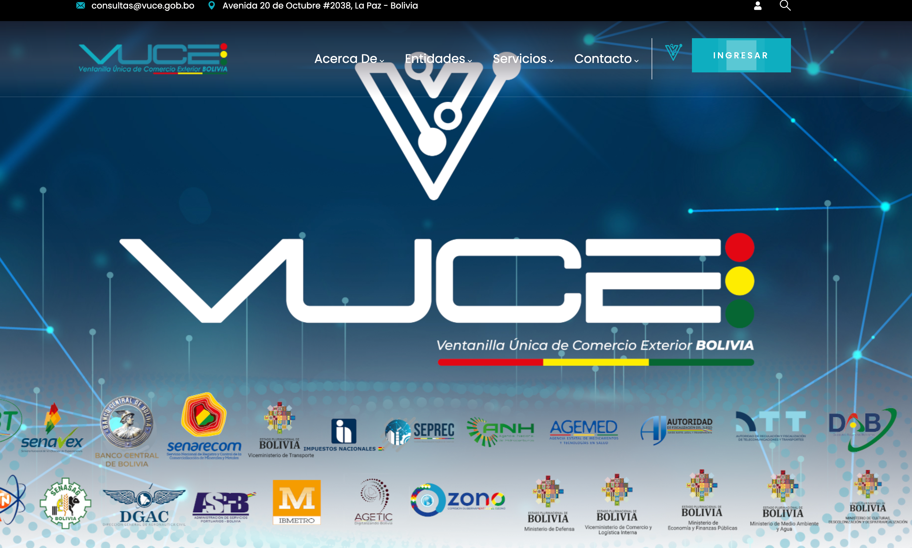
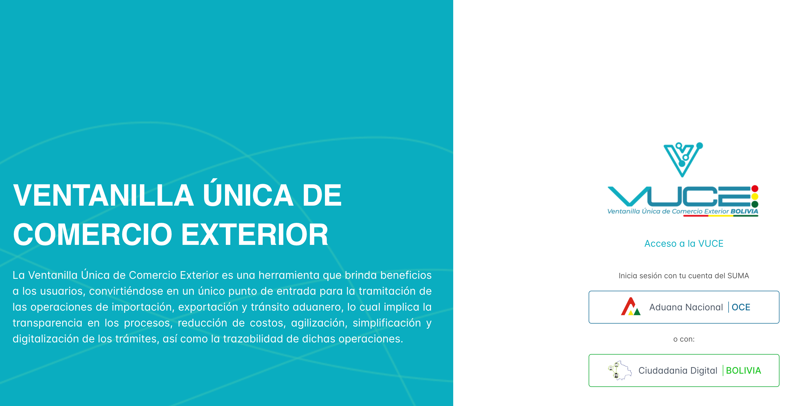
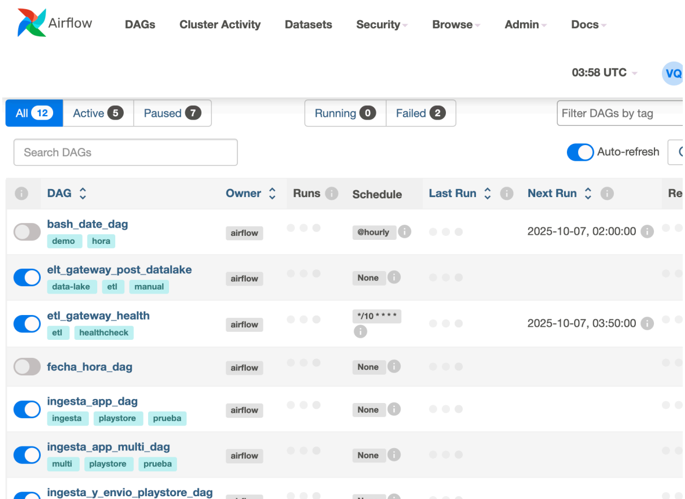
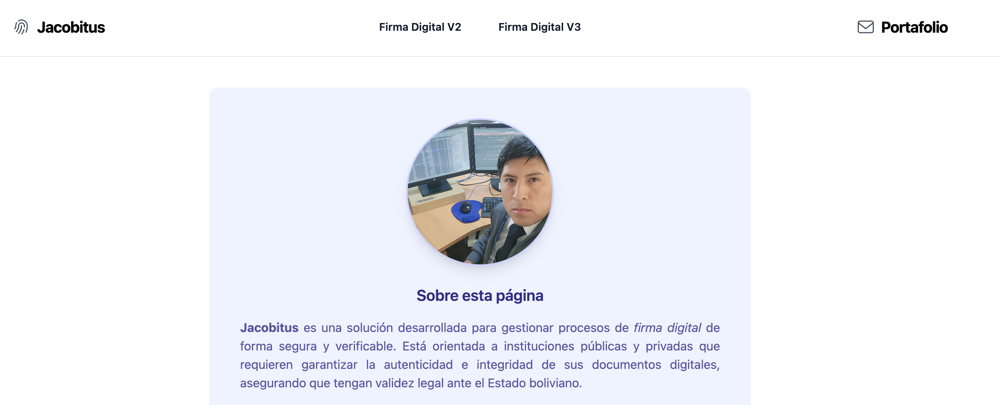

Proyectos:
-

Portal VUCE — Aduana Nacional
Portal institucional de la Ventanilla Única de Comercio Exterior (VUCE) para la Aduana Nacional, desplegado en producción en 2024. Elaborado en Drupal 9, con acceso general.
-

Plataforma VUCE — Aduana Nacional
Plataforma del proyecto VUCE que permite autenticación e ingreso para usuarios OCE del sistema SUMA y Ciudadanía Digital, amboso con (OIDC). Arquitectura de microservicios consumo de APIs transversales y trazabilidad de trámites. Integración con entidades del Estado, uso de JWT/JWS para firma/autenticación y despliegue con CI/CD.
-

Machine Learnin and Data Science
Conjunto de notebooks y pipelines para ingestión, limpieza y modelado con Google Colab y Apache Airflow. Incluye ETL hacia MongoDB y PostgreSQL, orquestación con DAGs, y experimentos de Machine Learning (NLP/Clustering/Predictivo).
-

Firma Digital con JACOBITUS
Proyecto desarrollado para integrar firma digital usando JACOBITUS que permite firmar documentos electrónicos pdf. Esta solución se alinea al ecosistema de certificación de la ADSIB, garantizando validez legal, trazabilidad y verificación mediante códigos QR. Este proyecto fue diseñado como demo para su implementación en el sistema SUMA de Aduana Nacional. Este proyecto se integro al modulo de SUMA en la gestion 2024.
-

Proyecto: Pizarra Digital Web
Aplicación web para docentes y estudiantes de matemáticas. Integra MathJax/MathML para notación, generación de plano cartesiano y gráficos de geometría analítica, además de un canvas para escritura libre. Tecnologías: React (Hooks), Sass, MUI y Firebase para almacenamiento de imágenes/PDF.